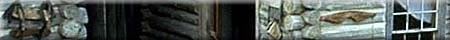
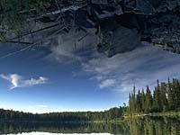

Aboriginal Art
Battle Creek
Boundary Station
Buffalo Narrows
Canada Air Show
Canadian Shield
Canoe River
Clarine Demo Forest
Cochin Lighthouse
Condie Refuge
Douglas Lake
Great Sand Hills
Hague Ferry
Highway #980
Highway #995
Island Falls Dam
Lobstick Tower
Mullock Lake
Mystery Rocks
Nipawin Dam
North Sask River
Otter Rapids
Parliament
Potash Monument
PCS Allan Division
Rice River
Schwinn Classic
Scotty T-Rex
The Moon & Stars
Tobin Lake Dam
Trading Post
Train Bridge
Water Bomber

|  | Not all of Saskatchewan's diverse nature can be neatly packaged into history books and geography texts. These are some of the unique, obscure and interesting tales of the Province and its people. |
|
Aboriginal Art Artist and carver, Allen Adolph of the Coyote Clan, displays some of his artwork for our viewing.
Battle Creek Sweat Lodge Visit a functional Aboriginal sweat lodge in the west block of the Cypress Hills Provincial Park and experience the healing powers of the "Creator".
Boundary Dam Power Station Vast coal fields can be found in the south east part of Saskatchewan. This power generating plant near Estevan converts the stored energy within the coal into electricity.
Buffalo Narrows Northern Saskatchewan is a mix of forest and lakes, with limited access by roads. Float planes are the only physical links that many communities have to the outside world. Buffalo Narrows can be visited by car or plane.
Canada Remembers Air Show The annual Saskatoon air show honours those who fought on our behalf.
Canadian Shield The Canadian Shield is one of the oldest and most stable geological formations on earth. See the rugged beauty of this region.
Clarine Lake Demonstration Forest The demonstration forest provides a quick tour of the boreal forest, the related timber industry, and modern forest management techniques.
Cochin Lighthouse Seafarers take heed or you'll run your vessel aground! There's an inland lighthouse on Jackfish Lake to guide your way through those gusting thunderstorms and prairie swells.
Condie Nature Refuge Protected habitat preserves the natural environment for the benefit of wildlife, not people. We must share this planet with many other species if we hope to protect our own future.
Douglas Lake Ten thousand years ago, Saskatchewan was almost entirely covered by huge sheets of ice that were miles thick. Look closely and you can see the scaring left in the bedrock by the advancing glacier.
Great Sand Hills This may not be the typical "image" of Saskatchewan, but the Great Sand Hills are part of our geological history. Explore the strange world of the prairie desert.
Hague Ferry The Hague Ferry is not a mythical creature with wings. It is a metal monster with floats and a tail that can reach across a river.
Highway #980 More of a narrow, twisting logging road than a highway, #980 cuts through the heart of moose country.
Highway #995 This dead-end road to northwestern Saskatchewan will take you to some of the best whitewater canoeing on the planet.
Island Falls Dam Just south of Sandy Bay, the Island Falls Dam provides a spectacular view of the Churchill River as it carves a path through the Canadian Shield.
Lobstick Ranger Tower One hundred and ten feet tall, the Lobstick Tower provides forest rangers with a bird's eye view of the surrounding forest. |
|
|
|
Mullock Lake Fantastic fishing can be found in the thousands of lakes and islands that cover Saskatchewan's north.
Mystery Rocks Aliens? The Gods? Ancient artisans or strange geological phenomenons? What or who formed these rocks?
Nipawin Dam Hydroelectric power generation is a renewable resource which harnesses nature's strength. Can you find the two fishermen?
North Saskatchewan River Valley This beautiful valley is home to many native prairie grasses, shrubs, trees, flowering plants, and was once part of the great buffalo herds grazing territory.
Otter Rapids Otter Rapids is one of the best known and most easily accessed sets of rapids on the Churchill River system. Those of you without canoes or kayaks can put on a lifejacket and swim through the rapids where even the paddlers can't go. Some brave (foolish?) individuals even jump into the turbulent waters from the bridge.
Parliament Regina is the capital city of Saskatchewan and the home of our provincial government. Visit the political seat of power and the flower gardens of Wascana Park.
Potash Monument Visit a piece of Saskatchewan's past and present economic history.
Potash Corporation of Saskatchewan Allan Division Travel 3500 feet below the surface of the earth to the sediment bottom of an ancient lake which formed a huge deposit of potash ore.
Rice River This is a strange place. It does not look like what you might expect of a northern Saskatchewan river.
Schwinn Classic Mountain Bike Race The South Saskatchewan River Valley may not be the Rocky Mountains, but thousands of local bike racers and enthusiasts call these climbs, drop-offs, trees, rocks, roots and mud, their home.
Scotty - Tyrannosaurus Rex For the last 65 million years one of the most vicious and feared beasts this planet has ever seen has been hiding in southern Saskatchewan. Witness an animal that would not only consider you part of the food chain, but could swallow you whole!
The Moon and Stars Saskatchewan is a geographic region on the surface of Earth, the third planet from our sun. Recent technological advancements have allowed mankind to travel beyond the bounds our atmosphere to study both distant celestial bodies and ourselves. Find out about the larger universe that 'Saskatchewan' is just a small part of.
Tobin Lake Power Station and Dam If you are feeling low on energy do something about it -- dam it!
Trading Post Trading posts were the convenience stores a hundred and more years ago. Although they didn't sell 'Slurpies', they traded furs for whiskey and beans, among other things.
Train Bridge When the railways laid track right across the country, the west was truly opened up for travel, trade, and settlement. This massive wooden bridge is still used by trains today.
Water Bomber Some of these planes are actually World War II bombers which were used in combat against the Germans. Today their payload is water and fire retardant chemicals used to fight the enemy of the forest and wildlife -- fires.
|